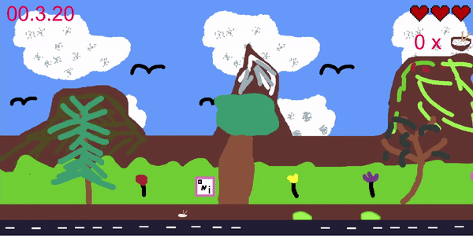
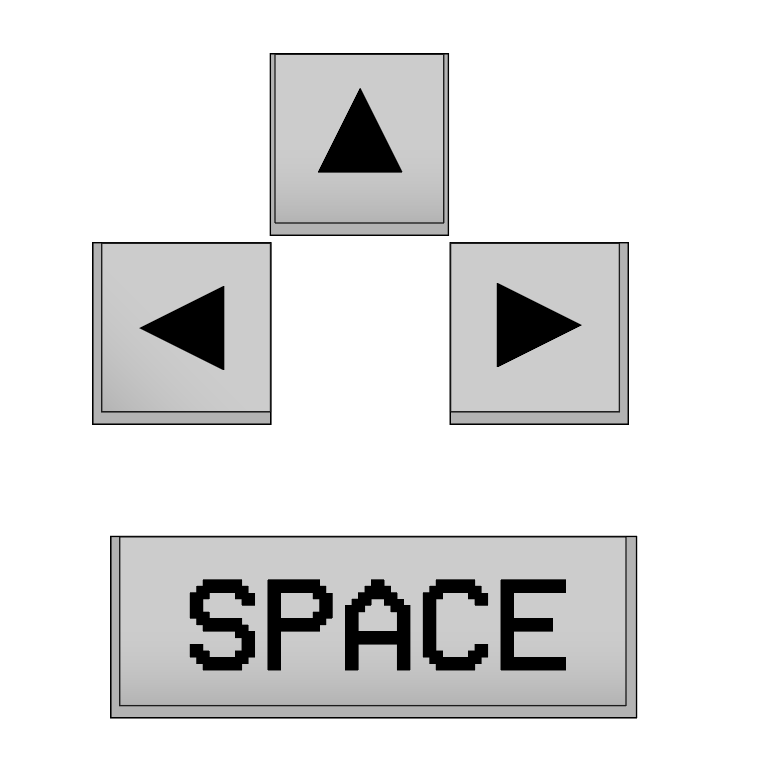
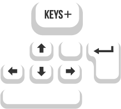

Medieninformatik 2 Portfolio
Dieses Portfolio war Teil des Projektes im Rahmen des Moduls "Medieninformatik 2". Es soll meine Fähigkeiten und den Entwicklungsprozess meines Spielprojektes präsentieren.
Semsterprojekt

Das Medieninformatik 2 Projekt dieses Semester bestand daraus, das man
ein Spiel mit Hilfe des Game Frameworks Phaser3 erstellen sollte.
Dieses Projekt wurde in Zusammenarbeit mit einer Kommilitonin
entwickelt, in dem ich die Hauptaufgabe der Spielphysik,
Spielcharaktere und der Einbindung ihrer Sprites übernahm. Teil meiner
Aufgabe war ebenfalls das Programmieren des parallaxen Hintergrundes
Darüber hinaus beschäftigte ich mich der kompletten HUD des Spieles,
der HUD Sprites, des Spielsterungsicons und dem Musikbutton für das
Hauptmenü. Ich positionierte die verschiedenen HUD Elemente im Spiel
und im Hauptmenü
Vorbereitungsphase: Aufbau der Spielphysik und Charaktersteuerung

Anfänglich erstellte ich TestSprites für die verschiede Spielelemente,
wie die des Spielcharakters, Hintergrundes und der Reisbälle. Ziel war
es, den Spielcharakter seitlich bewegen zu können, Reisbälle zu
schießen und zu springen. Mit Hilfe der definierten Spielphysik sollte
die Schwerkraft dafür sorgen, dass der Spielcharakter wieder auf den
Boden fällt. Außerdem wurde das "Spielfenster" für die Welt erstelt,
durch das der Spielecharakter in seinen Bewegungen begrenzt ist, z.B.
kann der Charakter nicht durch die untere Grenze des Spielfensters
fallen.
Entwicklungsphase: Gestaltung der Spielwelt und der HUD

Während der Entwicklungsphase des Projektes designte ich weitere
Testsprites für Hintergrund und den Gegner (Wasabi). Ich erstellte ein
Hauptmenü mit dem Titel, der Steuerung, Musiksymbol und einem
Playbutton. Das HUD wurde erstmals ins Spiel eingebunden und die
Interaktion mit ihm implementiert. Grundlegende Interaktionen mit
Objekten, wie Kollision mit der Reisschüssel oder einem Gegner, wurde
realisiert und der Spieler über Veränderungen im HUD sofort
signalisiert.
Testphase: Debugging der Spielmechaniken

Die Testphase diente dem Debugging d.h. mögliche Spielfehler oder Bugs
zu suchen und zu beheben . Durch simple Hintergrundbilder wurde der
Parallaxhintergrund getestet und die Geschwindigkeit des Scrollens
angepasst. Es wurden Änderungen in der HUD vorgenommen und im nächsten
Schritt began die Entwicklungsphase für weitere Gegner und der Sprites
für alle Spielelemente.
Gestaltung der Spielelemente
- Spielsteuerung -



Die Spielsteuerung wurde zuerst in Adobe Illustrator erstellt, wurde
dann aber mit Hilfe eines runtergeladenen Assets von
https://opengameart.org/content/keyboard-keys
komplett neu erstellt und farblich angepasst, um sich von den hellen
Menüfarben abzuheben. Die Schriftart
https://www.1001freefonts.com/pixeldown.font
ist die selbe wie beim Spieltitel.
- Lebensanzeige -


Für die Lebensanzeige in der HUD wurde in Aseprite zuerst ein
einzelnes Herz in Pixelart erstellt. Im nächsten Schritt enstand
daraus ein Spritesheet für die 3 Leben des Spielcharakteres und durch
farbliche Anpassungen auch das Boss-HP Spritesheet. Die Lebensanzeige
des Spielers und des Bosses unterscheiden sich nicht nur durch ihre
Farbe, sondern auch durch die Animation der Lebensanzeigen: Der
Spieler hat 3 rote Herzen und bei Schaden leeren sie sich. Die 5
lilafarbenden Herzen der Bosse werden durchgestrichen, wenn sie
Schaden nehmen.
- Ricebowl -


Das Design der Reisschüssel war beim anfänglichen Erstellen sehr blass
und hebte sich kaum von der Umgebung ab. Durch die geringe
Farbintensität weckte sie kaum die Aufmerksamkeit des Spielers. Es
galt die Reisschüssel zu überarbeiten, indem die Farbe der Schüssel
sowie der Stäbchen intensiviert wurde. Ziel war es, den Spieler durch
das kräftige Rot auf die Reisschüssel hinzuweisen.